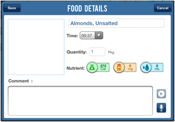

To modify a food item entry (e.g., to enter a comment about the food or edit time / quantity), click on the food item you wish to make changes to. A "Food Details" box will pop up on the screen with the currently entered values.

Modify these fields as needed, then click on the "Save" button when you're done.
Use the microphone button to create a voice recording:
Use the playback button to hear all voice recordings: